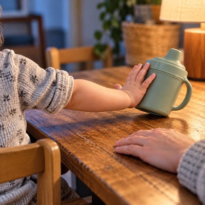
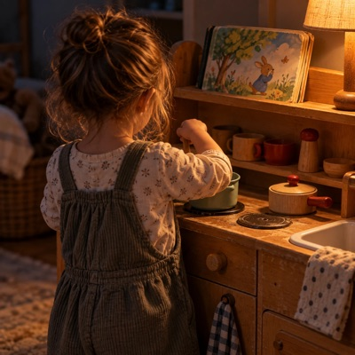
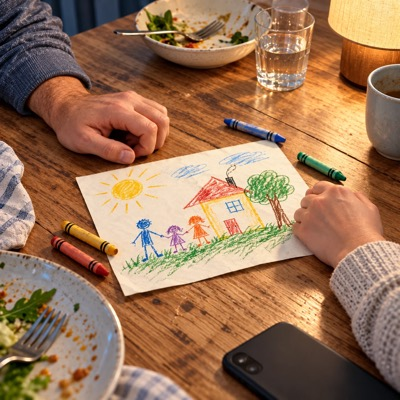
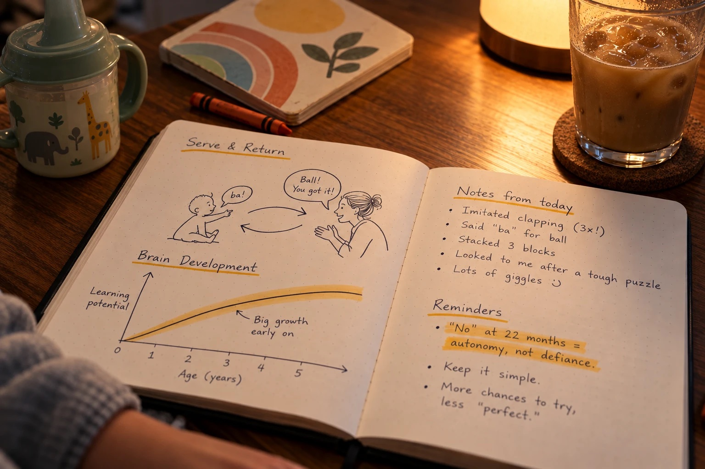

The first five years, mapped.
A developmental-science education for parents of children 0 to 5. If you love your child and love the science, these classes will make you the most capable parent you can be.
Taught by Matthew McArthur, a published child development specialist with graduate training in psychology and research and hands-on experience coaching parents to support their children’s learning and development.
Foundations: birth to one
At 2 years, 3 months
- What is growing now
- Researchers estimate the infant brain forms about a million new neural connections every second. Attachment, sensory maps, and the rhythm of back-and-forth interaction are the main work of this year.
- What helps
- Serve and return: when your baby babbles or looks at something, respond. That ordinary loop, not flashcards, is what builds the architecture.
Taught in Class 1, Birth to 12 months →
First words, first steps: one to two
At 2 years, 3 months
- What is growing now
- Walking opens the world, and language understanding races far ahead of speech. Joint attention, the act of looking at something together, is how words get attached to things.
- What helps
- Narrate the ordinary. Name what your child is already looking at. Conversation, not instruction, is how vocabulary grows at this age.
Taught in Class 2, Toddler years →
Autonomy and big feelings: two to three
At 2 years, 3 months
- What is growing now
- “No” is a developmental milestone, not defiance. Toddlers are practising self-determination while the prefrontal cortex is still profoundly immature, so big feelings outrun the brakes.
- What helps
- Real choices where you can, calm limits where you must. Your steadiness during a meltdown is the scaffold their regulation is built on.
Taught in Class 2, Toddler years →
The imagination years: three to four
At 2 years, 3 months
- What is growing now
- Pretend play takes off, and it is serious cognitive work: holding two realities at once, taking perspectives, rehearsing social roles. Early self-regulation begins here.
- What helps
- Protect unstructured play. Join the pretend world on your child’s terms sometimes, because following their lead is what makes it developmentally rich.
Taught in Class 3, Preschool years →
Self-control, slowly: four to five
At 2 years, 3 months
- What is growing now
- Executive function (working memory, flexible thinking, impulse control) is under construction, and it develops on a wide, normal range. Readiness is a window, not a race.
- What helps
- Games with rules, real responsibilities, and routines they can predict. Practice, not pressure, is how self-control grows.
Taught in Class 3, Preschool years →
Why the science matters
In my work with families, the parents who do best are, almost without exception, the ones who understand the science.
Parents who know how development works stay calmer, read their children more accurately, and change the things that actually matter. Not because they memorised scripts, but because they can see what is happening in front of them.
Every class teaches you to read three things.
- Your child
- What is being built at this age, what is typical and what is not, and why the hardest behaviours are so often the development itself, showing up on schedule.
- Yourself
- How your own nervous system, history, and stress enter the room, and what regulation actually looks like in an adult, because a child’s calm is borrowed before it is owned.
- Your influence
- Which parts of the environment shape development (conversation, routines, serve and return) and which worries the research lets you set down for good.
Matthew McArthur teaches every class. He wrote “Why Early Chatter Matters” for Frontiers for Young Minds, and has coached more than 100 families in Los Angeles, where he teaches an Infant and Toddler Socialization class. About Matthew →
Four routes, in order.
Each class covers one stretch of the first five years. Start with the one your family is in now, or take them in sequence as your child grows. Every class is self-paced and yours for life.
-
Birth to 12 months
Class 1: cues, attachment, and the first year
After this class you can explain why responsive care builds security rather than spoiling, what infant sleep actually looks like across the first year, and how language begins long before the first word.
Open now
-

Toddler years, 1 to 3
Class 2: language, autonomy, and big feelings
After this class you can explain why “no” is a milestone rather than defiance, what a meltdown is neurologically, and how your calm becomes the scaffold their regulation is built on.
-

Preschool years, 3 to 5
Class 3: self-regulation, play, and readiness
After this class you can explain why pretend play is serious cognitive work, how executive function develops on a wide normal range, and what kindergarten readiness means in the research rather than in the brochure.
Open now
-

The whole family
Class 4: family systems, stress, and the developing child
After this class you can explain how household stress reaches a child’s nervous system, why your own regulation is a developmental variable, and which protective factors hold up inside real families.
In development
Taught like a seminar. Built for a Tuesday night.
Short video lessons, watched in any order at any hour. The research is shown rather than hidden, and the goal is a mental model you can carry, not a script to recite. The five teaching principles are on the About page.
- Lessons of about ten minutes
- Self-paced, lifetime access
- Sources cited in every lesson

Office hours, any hour.
Ask the question that came up at bedtime. Growing Minds AI answers from a curated library: peer-reviewed developmental research, the milestone data behind our tracker, and the class curriculum itself. Every answer shows where it is grounded, and points you to the lesson that covers it in depth.
Growing Minds AI is free to try: five questions a day with no account, unlimited with the toddler class. Educational only, never medical advice.
Free reading and tools, between classes.
Written and built the same way the classes are taught. No account needed, so you can see whether the approach fits your family before you enroll.
Reading
Research explained without buzzwords or parenting shame.
- What “serve and return” actually meansThe ordinary loop that builds the architecture.
- The toddler “no” is not the war you think it isAutonomy, on schedule.
- When your own nervous system is the variableCo-regulation, from the adult side.
Tools
Interactive tools for the moments between lessons.
- Growing Minds AIAsk a parenting question. Every answer shows its sources.
- Milestone trackerWhat is typical at each age, birth to three.
- Claims libraryCommon parenting claims, checked against the research.
Three classes are open now. One payment each, for life.
One payment, no subscription, lifetime access at your own pace. Enroll and start the first lesson tonight, on any device.
-
Birth to 12 months
Captions and a written version of every lesson
Create a free account, then pay with Stripe; lessons live in My classes. Not sure yet? Watch a lesson free.
$49
Enroll in Birth to 12 months -
Toddler years, 1 to 3
Unlimited Growing Minds AI, for life
Checkout opens in a new tab; your login arrives by email within minutes. Already enrolled? Open My classes.
$49
Enroll in Toddler years (opens in a new tab) -
Preschool years, 3 to 5
Create a free account, then pay with Stripe; lessons live in My classes.
$49
Enroll in Preschool years
Full refund within 14 days if you’ve watched 4 lessons or fewer.
Before you enroll
Can I try the approach before I pay?
Yes. Watch “Serve and Return” free, a full lesson from the infant class, with no account. The articles, free tools, and Growing Minds AI are written the same way the classes are taught.
Do I need any background in psychology?
No. The classes assume you are intelligent and busy, not that you have read the literature. Every term is explained the first time it appears.
How long do I have access?
For life. One payment, no subscription, no deadlines. Watch on your phone, tablet, or laptop, in any order.
Can I get a refund?
Yes. Within 14 days of buying, and as long as you’ve watched 4 lessons or fewer, you get a full refund: email Matthew with the address you bought with. The free lesson doesn’t count toward the four. A refund ends your access to that class.
Is this medical or psychological advice?
No. The classes are educational. For concerns about your own child, your pediatrician and your child’s clinicians are the right people to ask, and the classes will help you ask better questions.